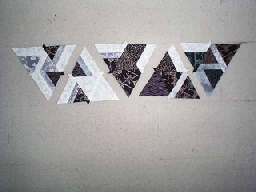
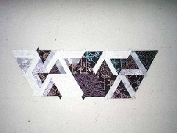
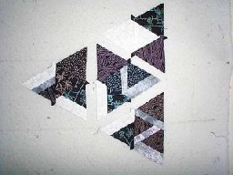
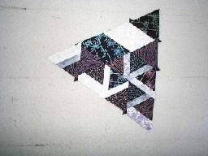
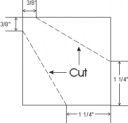
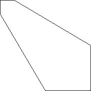

P.O. Box 1342 * Bellevue, WA 98009 * jlk@eskimo.com
 2000 Jane L. Kakaley
2000 Jane L. Kakaley
PART SIX
If you have not yet completed Part Five, please finish before continuing with Part Six.
1. Arrange the following triangles:
 one from Step 2, Part 5,
one from Step 2, Part 5,
one from Step 4, Part 5,
one from Step 6, Part 5,
one from Step 12, Part 5 and
one from Step 10, Part 5
as shown in Figure 28.

Figure 28
2. Sew together to create the strip shown in Figure 29.

Figure 29
3. Repeat steps 1 and 2, making a total of 6(54) strips.
4. Arrange the following triangles:
one from Step 8, Part 5,
one from Step 14, Part 5,
one from Step 16, Part 5 and
one from Step 10, Part 5
as shown in Figure 30.

Figure 30
5. Sew together to create the triangle shown in Figure 31.

Figure 31
6. Repeat step 5, making a total of 6(54) triangles.
7. Cut four(thirty-six) 2 1/2" squares from the 2 1/2" strip of fabric W.
8. Trim each of the four(thirty-six) squares as shown in Figure 32, creating the shape shown in Figure 33.

Figure 32

Figure 33
Part Seven will be available November 1st. Have fun!